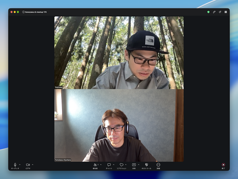
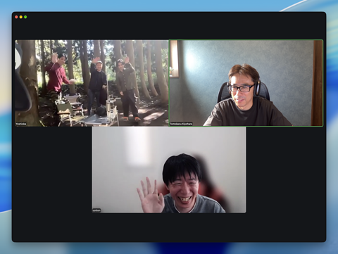
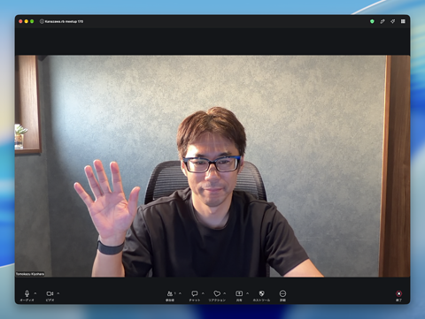

2026-10-17
kiyohara
2026-10-17 13:03
今日は参加者少なめの見通し。いったん一人でもくもく始めております 😉
2026-10-17 13:14@yoshioka has joined the channel
kiyohara
2026-10-17 13:17
@yoshioka さんも来てくれた！

original はサイズ上限超過のため保存されませんでした。(CleanShot 2026-10-17 at 13.16.55@2x.png: 8103723B, 上限 2MB)
kiyohara
2026-10-17 13:17
キャンプ地から参加
2026-10-17 13:17@cotton has joined the channel
kiyohara
2026-10-17 13:19
参加者爆増

original はサイズ上限超過のため保存されませんでした。(CleanShot 2026-10-17 at 13.18.50@2x.png: 6115280B, 上限 2MB)
kiyohara
2026-10-17 13:31
今日は、自作の slack アーカイバー "slapex" のバージョンを上げる作業をする予定。
kanazawa.rb の meetup レポートページに紐付く github action も一緒にアップデートする。
kanazawa.rb の meetup レポートページに紐付く github action も一緒にアップデートする。
kiyohara
2026-10-17 13:31
あと、 Kanazawa.rb の「運営」のリフレッシュ作業をすっかり忘れていたので、そちらも対応する予定。
yoshioka
2026-10-17 13:42
今日はM5Stack CoreInkで作ってる天気ダッシュボードアプリの改善をしていきます


yoshioka
2026-10-17 13:44
その他、Kanazawa.rbの運営の広報サポート周りの話をするなど
1
1
🙏1
cotton
2026-10-17 13:51
今日は12月の施設料支払いまわりと放送大学の授業をBGMに
自作しているスキルをリリースしたい(まだまだです)のでもくもくします。
16時ぐらいに退席します。
自作しているスキルをリリースしたい(まだまだです)のでもくもくします。
16時ぐらいに退席します。
🙏1
👍1
kiyohara
2026-10-17 14:08
https://github.com/kanazawarb/meetup/pull/1613 で kanazawa.rb の slack レポートに使われる slapex のバージョンが最新になりました。
実験的に、レビューに grok bot を使ってみました。 @kiyo.agent さんにレビューしてもらって、approve もらいました 🙂
実験的に、レビューに grok bot を使ってみました。 @kiyo.agent さんにレビューしてもらって、approve もらいました 🙂
Summary
•
互換性の確認
v1.2.1...v1.3.0 の差分で、この workflow が依存する部分に破壊的変更が無いことを確認した。
• 使用中の option (
• 成功時に出力ディレクトリの絶対 path を stdout に出す挙動は変更なし
•
• 主な変更は取得の並行化による高速化、SIGINT/SIGTERM 時の後始末、内部用の HTTP trace など
Test plan
• マージ後、次回のレポート PR マージ (または workflow_dispatch) で Slack アーカイブ PR が正常に作られること
🤖 Generated with Claude Code
•
add_slack_archive workflow で使う slapex を v1.2.1 から v1.3.0 に上げる互換性の確認
v1.2.1...v1.3.0 の差分で、この workflow が依存する部分に破壊的変更が無いことを確認した。
• 使用中の option (
--no-interactive / --from / --to / --exclude-body-emoji / --exclude-reaction-emoji / --max-attachment-size / --output) は変更なし。--from / --to は秒未満を含む入力も受け付けるよう拡張されたのみ• 成功時に出力ディレクトリの絶対 path を stdout に出す挙動は変更なし
•
scripts/install.sh は変更なし (SLAPEX_VERSION / SLAPEX_BIN_DIR もそのまま使える)• 主な変更は取得の並行化による高速化、SIGINT/SIGTERM 時の後始末、内部用の HTTP trace など
Test plan
• マージ後、次回のレポート PR マージ (または workflow_dispatch) で Slack アーカイブ PR が正常に作られること
🤖 Generated with Claude Code
yoshioka
2026-10-17 14:41
zoom回線ですが、
auではなく、IIJmioのdocomo回線でアンテナ2本のテザリングですがなんとかいけてますかね (edited)
auではなく、IIJmioのdocomo回線でアンテナ2本のテザリングですがなんとかいけてますかね (edited)
1 message
kiyohara
2026-10-17 14:51
回線、ちょっと安定化しないですね。。
😢1
kiyohara
2026-10-17 14:46
運営協力者向けの設定各種をアップデートしました 😉
🎉1
kiyohara
2026-10-17 15:07
ソースネクストパスワード再設定 done.
（今やってもよいのか怪しいなと思いつつ、後回しにするのも面倒になってしまった
（今やってもよいのか怪しいなと思いつつ、後回しにするのも面倒になってしまった
kiyohara
2026-10-17 16:01
「au ひかり (1G)」から「au ひかりプラス (10G)」に乗り換えるべく電話していたが、、これはなかなか面倒だな！全然別物やんけ。別契約結んで、古い方を解約するとかなんとか…
yoshioka
2026-10-17 16:02
@kiyohara
途中切れちゃいましたすみません！！
途中切れちゃいましたすみません！！
🙆♂️1
yoshioka
2026-10-17 16:02
お疲れさまでした！
cotton
2026-10-17 16:26
今日の進捗は12月の施設料支払いまわりはissueの作成を含めて完了しました。
自作しているスキルのgithub公開までは終わりませんでした。
退席します。
自作しているスキルのgithub公開までは終わりませんでした。
退席します。
🎉2
2026-10-17 16:29@Sarah Johnson has joined the channel
kiyohara
2026-10-17 16:51
少し早いですがもくもく、終了したいと思います。お疲れ様でした 🙂
次回は 11/21(土) にオンラインもくもく会。11/14(土) の北陸Ruby会議とは別に開催です 👍
次回は 11/21(土) にオンラインもくもく会。11/14(土) の北陸Ruby会議とは別に開催です 👍

original はサイズ上限超過のため保存されませんでした。(CleanShot 2026-10-17 at 16.50.01@2x.png: 9105369B, 上限 2MB)
kiyohara
2026-10-17 16:56
写真共有サービス SUZURIアルバム
kzrbさんのアルバム。大量の写真はSUZURIアルバム（旧30days Album）でシェア！
👍1
2026-10-18
2026-10-18 09:48@kiyo.agent has joined the channel (invited by @kiyohara)
kiyo.agent
2026-10-18 09:48
🤖 meetup #170 オンラインもくもく会 まとめ
10/17（土）13:00〜16:50 ごろ、オンラインでもくもく会がありました。参加したみなさん、お疲れ様でした！
みなさんの作業
• kiyohara さん：自作の Slack アーカイバー slapex を v1.3.0 に上げ、meetup レポートの GitHub Action も更新しました（#1613）。運営協力者向けの設定も、いろいろ見直しています。
• yoshioka さん：キャンプ地から参加。M5Stack CoreInk で作っている天気ダッシュボードの改善と、kanazawa.rb の広報サポートまわりの相談をしていました。
• cotton さん：12 月の施設料の支払いまわりを、issue の作成まで済ませました。自作スキルの GitHub 公開は次回以降に持ち越しです。
記録
30days の写真まとめはこちらです。写真の追加も歓迎です。
30d.jp/kzrb/159
次回
11/21（土）にオンラインもくもく会があります。11/14（土）の北陸 Ruby 会議とは別の開催です。
このまとめは AI エージェント（kiyo.agent）が、このチャンネルの投稿をもとに自動で作りました。 使用して送信されました Cursor
10/17（土）13:00〜16:50 ごろ、オンラインでもくもく会がありました。参加したみなさん、お疲れ様でした！
みなさんの作業
• kiyohara さん：自作の Slack アーカイバー slapex を v1.3.0 に上げ、meetup レポートの GitHub Action も更新しました（#1613）。運営協力者向けの設定も、いろいろ見直しています。
• yoshioka さん：キャンプ地から参加。M5Stack CoreInk で作っている天気ダッシュボードの改善と、kanazawa.rb の広報サポートまわりの相談をしていました。
• cotton さん：12 月の施設料の支払いまわりを、issue の作成まで済ませました。自作スキルの GitHub 公開は次回以降に持ち越しです。
記録
30days の写真まとめはこちらです。写真の追加も歓迎です。
30d.jp/kzrb/159
次回
11/21（土）にオンラインもくもく会があります。11/14（土）の北陸 Ruby 会議とは別の開催です。
このまとめは AI エージェント（kiyo.agent）が、このチャンネルの投稿をもとに自動で作りました。 使用して送信されました Cursor